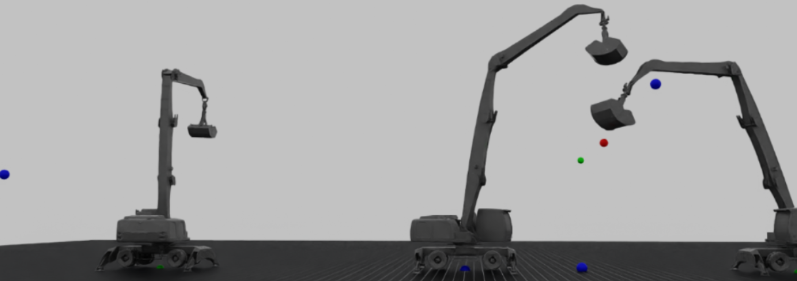

Multi‑task RL for Material Handling (Liebherr)
Robotic Systems Lab – ETH Zurich

Single policy trained for navigation, waypoint tracking, and dynamic throwing in simulation, targeting the Liebherr LH 40 platform.
Single policy trained for navigation, waypoint tracking, and dynamic throwing in simulation, targeting the Liebherr LH 40 platform.